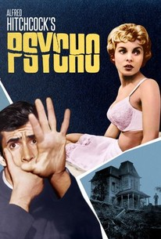
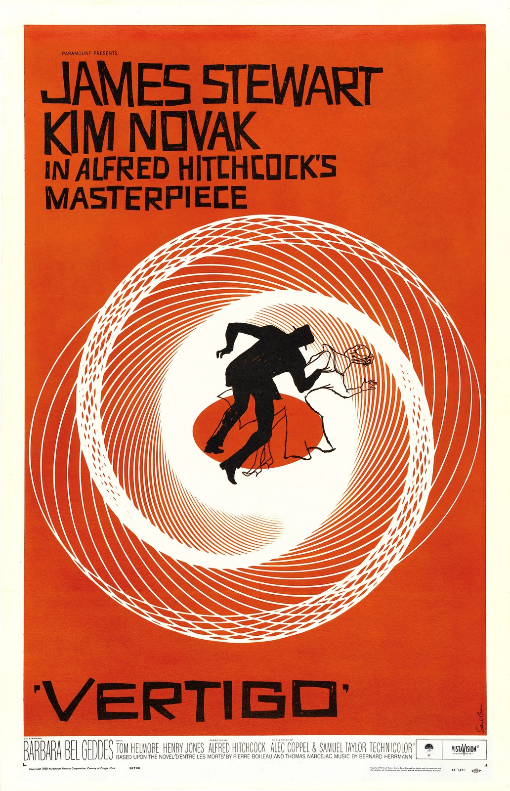
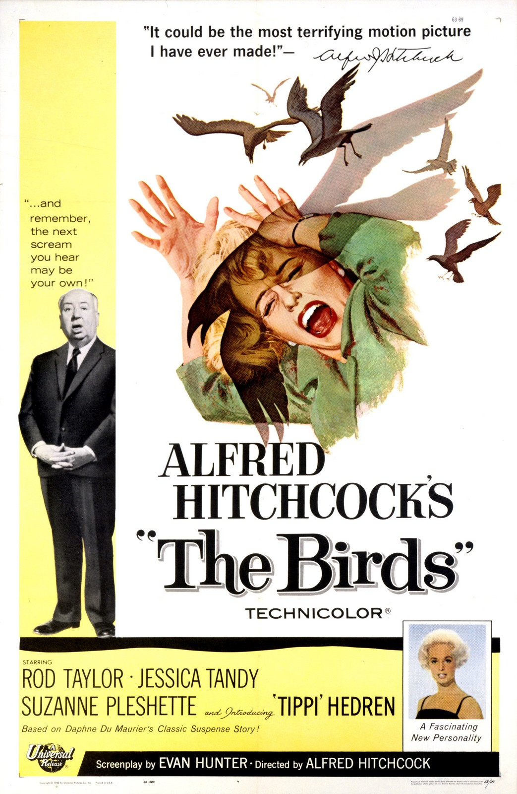
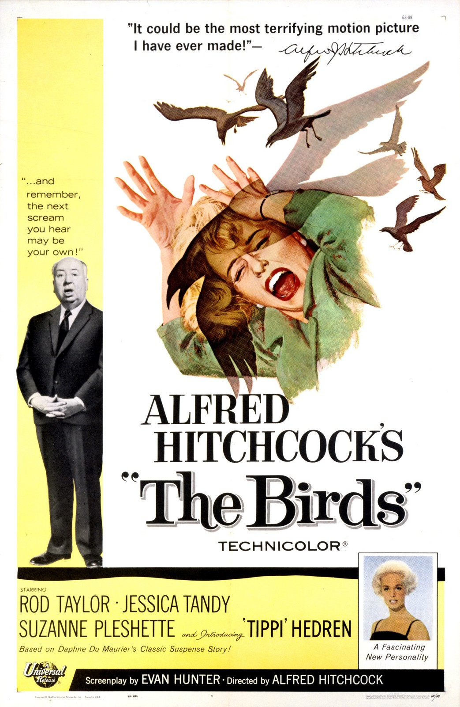

Notable Creations
Hitchcock directed over 50 feature films in a career spanning six decades, becoming as well known as any of his actors thanks to his many interviews, his cameo roles in most of his films, and his hosting and producing the television anthology Alfred Hitchcock Presents (1955–65) of which he created 361 episodes.
  

Hitchcocks Most Recognisable Filmic Traits
Going in depth about Hitchcocks filmic traits is too hard, and what's the point of creating something someone has already created, and created with way more information and detail than I ever could of created. So, linked below is a website which goes deep into depth about Hitchcocks filmic traits throughout his carrer, and what made his film style great.
View Site